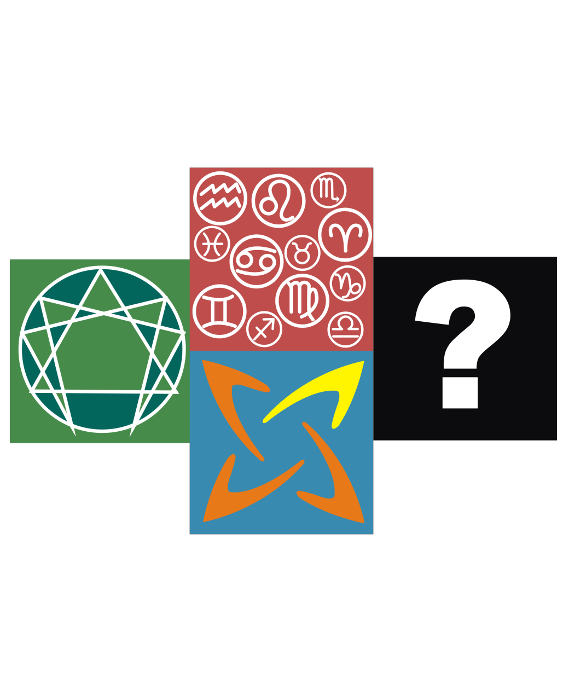

苏格拉底是什么？ 性格测试 游客，你好！苏格拉底是一家新晋的性格测试网站，提供专业的人格测量、职业匹配和婚恋匹配等心理测量网络服务，请在左上方使用菜单。 人格测量 现有的各种人格测量存有专用性过强，难以使用，并且基础理论不足导致测量不准确等。我们在测量友好性、易用性和科学性方面做了很大的改善。 特色 苏格拉底 幸福从正确认识你自己开始 人格心理学 了解你身边朋友、同学和亲人的人格（性格）  应用心理学 使用比星座、九型、MBTI等更优的技术 Sugeladi.NET 最新最前沿的人格心理学研究成果